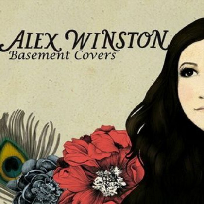
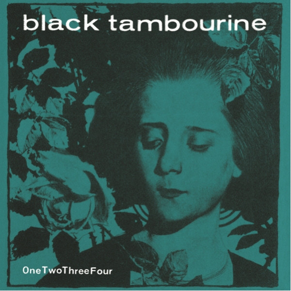
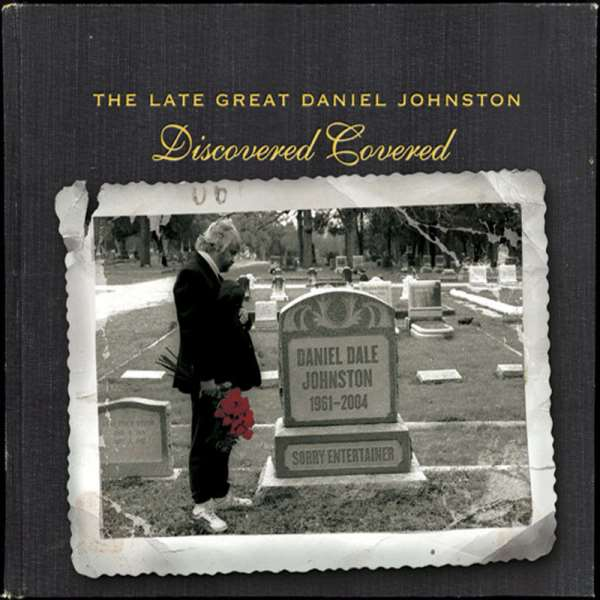
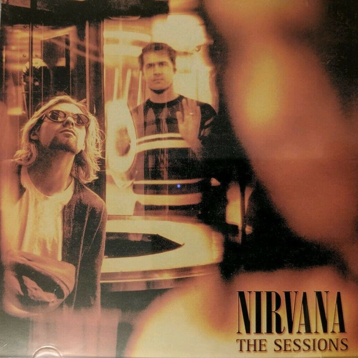
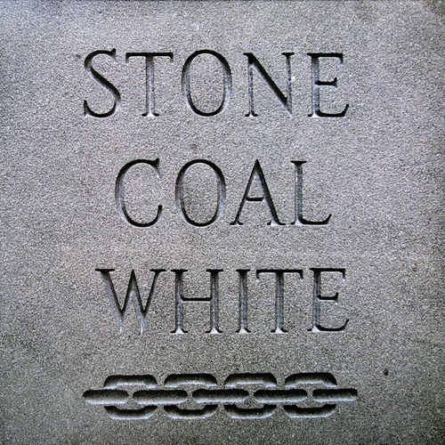
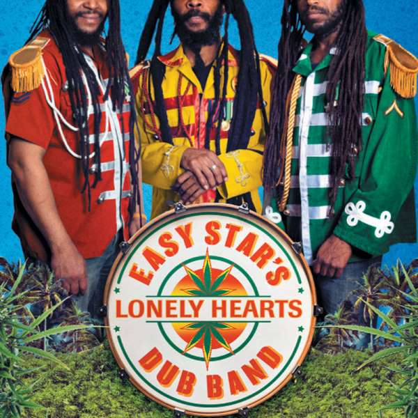
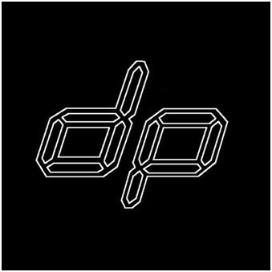
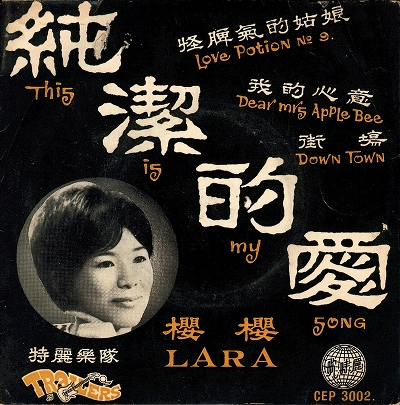

01
01
Harvest Moon
Sunflower Bean – From the Basement (2016)
orig. Neil Young
 02
02
Hello Sunshine
Damien Jurado & Richard Swift – Other People's Songs Volume One (2016)
orig. Wilson Pickett

03Pull My Heart Away
Alex Winston – The Basement Covers (2010)
orig. Jack Penate
 04
04
Candy Says
The Telescopes – Unpiecing the Jigsaw - A Tribute to The Velvet Underground (2009)
orig. Velvet Underground
 05
05
There's A Kind Of Hush
Deerhoof – EP (2006)
orig. Herman's Hermits
 06
06
Sleepyhead
Ellie Goulding feat. Starsmith – Album Sampler (2009)
orig. Passion Pit

07I Wanna Be Your Boyfriend
Black Tambourine – OneTwoThreeFour (2012)
orig. The Ramones
 08
08
These Days
Paul Westerberg – Come Feel Me Tremble (2014)
orig. Jackson Browne

09Go
Sparklehorse with The Flaming Lips – The Late Great Daniel Johnston: Discovered Covered (2001)
orig. Daniel Johnston
 10
10
The More I See You
The Last Names – 52 Covers (2012)
orig. Peter Allen
 11
11
Lay Lady Lay
Buddy Guy/Anthony Hamilton/Robert Randolph – Bring 'Em In/Skin Deep (2013)
orig. Bob Dylan
 12
12
It Ain't Me Babe
Fleet Foxes – Internet Single (2009)
orig. Bob Dylan
 13
13
Smells Like Teen Spirit
Patti Smith – Outside Society (2011)
orig. Nirvana

14Seasons In The Sun
Nirvana – The Sessions (2005)
orig. Terry Jacks
 15
15
Pink Frost
Masha Qrella – Not Given Lightly - A Tribute To The Giant Golden Book Of New Zealands Alternative Music Scene (2009)
orig. The Chills
 16
16
Tropical Loveland
Martin And The Moondogs – ABBAsalutely (A Flying Nun Tribute To The Music Of ABBA) (1995)
orig. Abba
 17
17
Eleanor Rigby
The Handsome Family – Scattered - A Further Collection Of Lost Demos, Orphaned Songs, And Odd Covers (2006)
orig. The Beatles
 18
18
Ruby Tuesday
Melanie – The Very Best Of Melanie (1998)
orig. The Beatles

19Ain't No Sunshine
Stone Coal White – Stone Coal White (2011)
orig. Bill Withers
 20
20
Heart of Gold
Charles Bradley/Menahan Street Band – Daptone Records Singles Collection: Volume 4 (2019)
orig. orig Neil Young
 21
21
96 Tears
The Stranglers – Sweet Smell Of Success - The Best Of The Epic Years (2003)
orig. Question Mark and the Mysterians

22A Day in the Life
Easy Star All-Stars feat. Michael Rose and Menny More – Easy Star's Lonely Hearts Dub Band (Bonus Track Version) (2015)
orig. The Beatles

23Young Turks - The Disco Pusher Remix
Au Revoir SImone – Internet Single (2008)
orig. Rod Stewart

24Down Town
Lara & The Trailers – This Is My Song (1967)
orig. Petula Clark